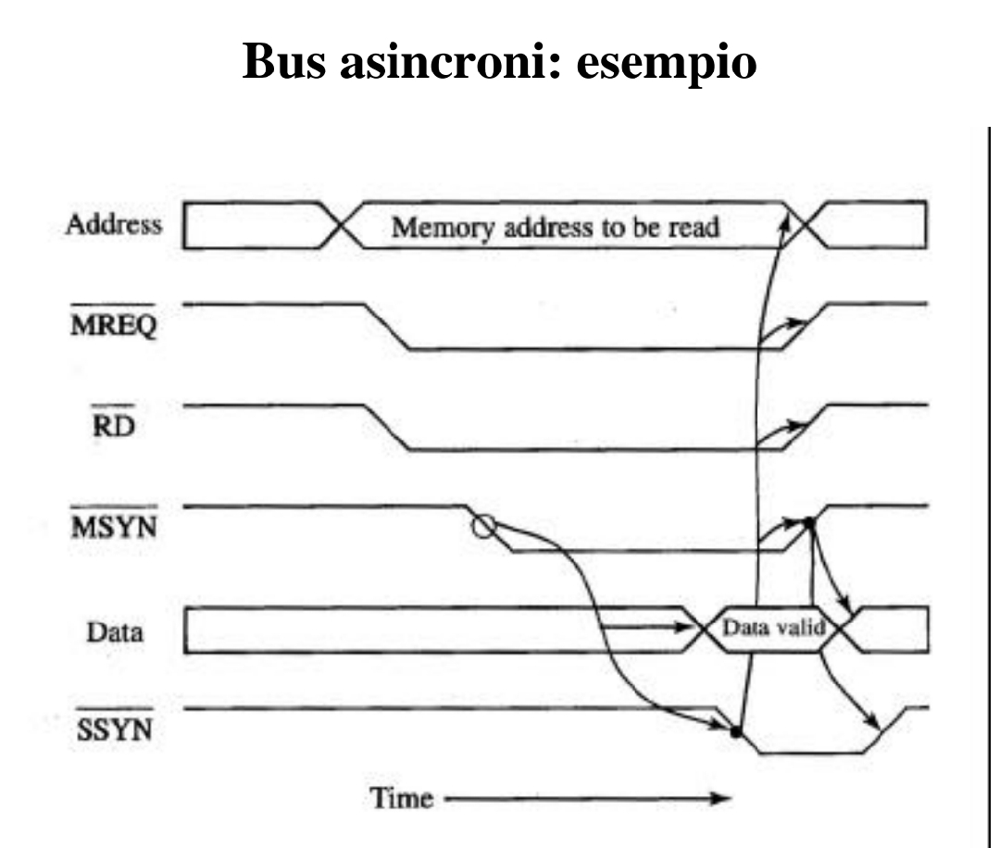

I BUS ASINCRONO

BUS ASINCRONO
Un bus asincrono non è dotato di clock. La comunicazione tra due parti avviene mediante un protocollo di handshaking.
I bus asincroni possono avere lunghezza elevata per connettere molti dispositivi.
Sono efficienti quando i tempi di esecuzione delle varie periferiche variano molto tra loro.
Spesso i bus di input e output sono asincroni.